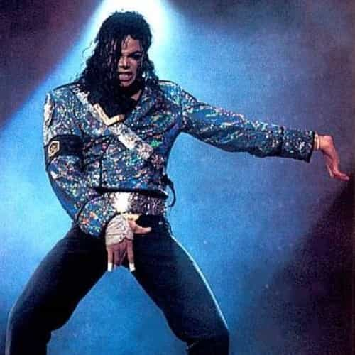

The three most destructive words a boy can hear growing up are ‘be a man’. Sometimes, we merely hear the exortation ‘man up!’, as some sort of challenge to prepare to fight, or complete some arduous task.
But, what does it really mean to ‘be a man’? For centuries, it was believed that a man should inter alia be the provider (or ‘breadwinner’) in a traditional nuclear family, not let his emotions get the better of him (or be on public show), take personal responsibility for his actions, be the decision-maker, demonstrate courage, bravery and integrity, and so on.
We now know that our ancestors were, at best, well-meaning, but are ultimately responsible for a society that is utterly broken by toxic masculinity. Our fore-fathers are responsible for the rape-culture than pollutes the modern world and makes it impossible for modern womyn to enjoy a quiet evening out, getting drunk, while wearing skimpy outfits, without the risk of being sexually assaulted.
The Harvey Weinstein scandal and other #metoo revelations of 2017/2018 have demonstrated, above all, that most men simply cannot be trusted to behave when in the presence of womyn. By their actions, men have proven the wisdom of feminists like Sarah Silverman, whose famous quote still reverberates: “all men are potential rapists”.
The first step to de-toxifying is to recognize that you are the problem
I, too, grew up in a traditional nuclear family and am therefore no stranger to the cult of toxic masculinity. As I grew up, however, and left the support of my patriarchal family-structure behind, I began to realise there was something deeply wrong with the world. Worse, I realised that I was the problem, and that my toxic masculinity was harming all that was good and noble in the world.
I suppose I can trace back the beginning of my ‘awakening’ to watching TV programmes, films, and adverts. None of the pathetic male characters I saw projected on my screen had the slightest idea how to cook, clean, or perform the simplest domestic task. They were forgetful, absent-minded, lazy, were chided by the smart womyn characters for messing everything up. For sure, they were physically (and emotionally) weaker as well.
The only thing they seemed to be good at was drinking beer, being aggressive and making crude jokes. Womyn, on the other hand, were smart, caring, assertive, strong, emotionally-intelligent, and always thrived in leadership positions where swift decisions had to be made.
As I watched film after film, advert after advert, I began to recognise my own weaknesses and failings in the male characters who were the butt of all the jokes. It was as though the film/ advert producers knew me better than I knew myself! About this time, I entered into a deep depression, wondering if there could ever be a way out of toxic masculinity. I rarely left the home – worried that, if I did, I wouldn’t be able to control my urges and would rape the first womyn I met, just like most non-reconstucted men do these days. I wondered if I would become a statistic: despite white privilege and toxic masculinity, paradoxically the group most at risk of suicide is white males.

I’m looking at the (toxic) man in the Mirror, I’m asking him to change his (toxic) ways
The law of attraction… when in desperate need of a solution, the Universe will provide one!
A few years ago, life changed for the better. I was in a dentist’s waiting room when I happened to pick up an old copy of ‘The Lady’. As I opened the magazine, I came across details for an exciting-looking course: “Rethinking Masculinity.” which was “a partnership between the Washington, D.C., Rape Crisis Center, Collective Action for Safe Spaces, and ReThink, an organization that works to prevent sexual assault.” I signed up straight away and, as they say, the rest is history.
On day one, we were given a document showing ten rape prevention tips, produced by Sarah Silverman. I still have the sheet, which I show below. Some of these tips seemed fairly common-sensical to me; others, however, I had simply never thought of, such as NOT putting drugs in womyns’ drinks. Other tips have stood the test of time and saved me from almost certainly raping someone; tip 9, for example, requires that I always carry a rape whistle in case I see an attractive womyn in public and feel my submarine’s ‘periscope rising to the surface.’
How to de-toxify your toxic masculinity in just a few easy steps
The course was helpful in so many other ways. I began to understand that historic toxic masculinity was caused by a vicious circle of upbringing in which generation after generation promoted the falsehood that there are differences between men and womyn. I now know that this is simply untrue, that men and womyn are exactly equal in all respects, except that womyn do things better than men, including building bridges.
Other course participants have described the content and benefits they believe the course has given them:
“We spoke of emotional labor, consent, violence, communication, empathy, and vulnerability,” [one participant said], noting that the last subject, in particular, was a struggle for him: “[I was] trained and conditioned to be tough growing up.” [emphasis added]
The Rethink program is the latest in a growing number of courses targeted toward people who identify as men, including the Men’s Project at the University of Wisconsin, Masculinity 101 at Brown, and the Duke Men’s Project at Duke. The goal, proponents say, is to help men examine their own biases and behaviors in order to cut down on misogyny and gender-based violence.”
Conclusion
As a graduate of the Rethinking Masculinity course, I would honestly recommend it to anyone who identifies as a male. Despite recent slippages, I would now never eat red meat or potatoes, for example, knowing that these poisons can elevate testosterone counts to dangerous levels.
Read Next: University Of Wisconsin Adds Six-Week Program On Toxic Masculinity